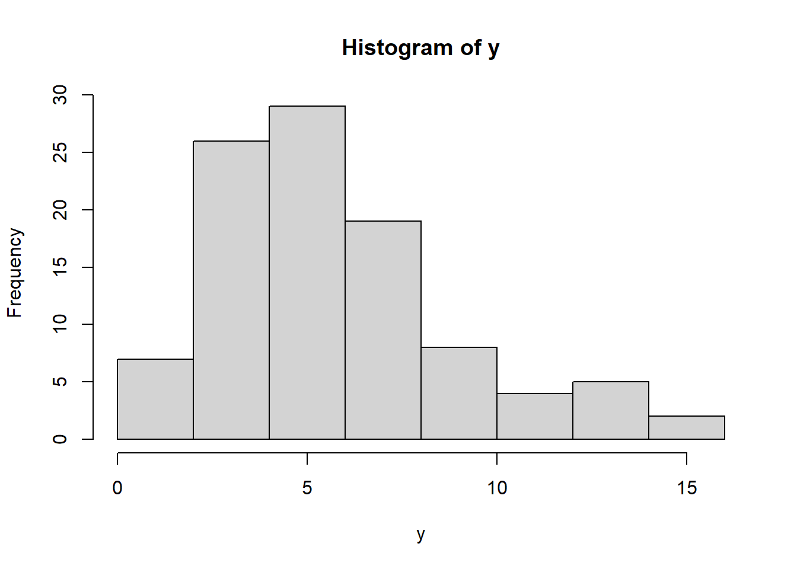
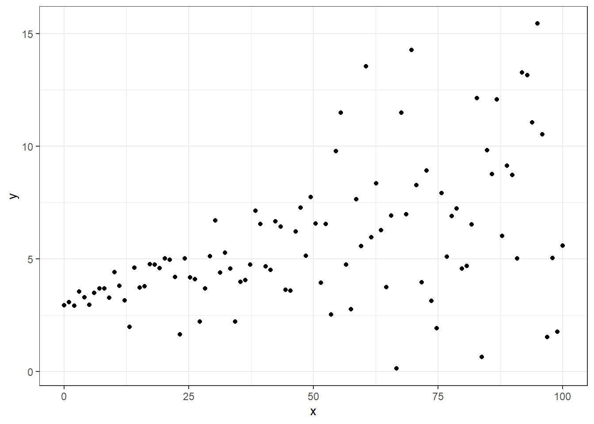
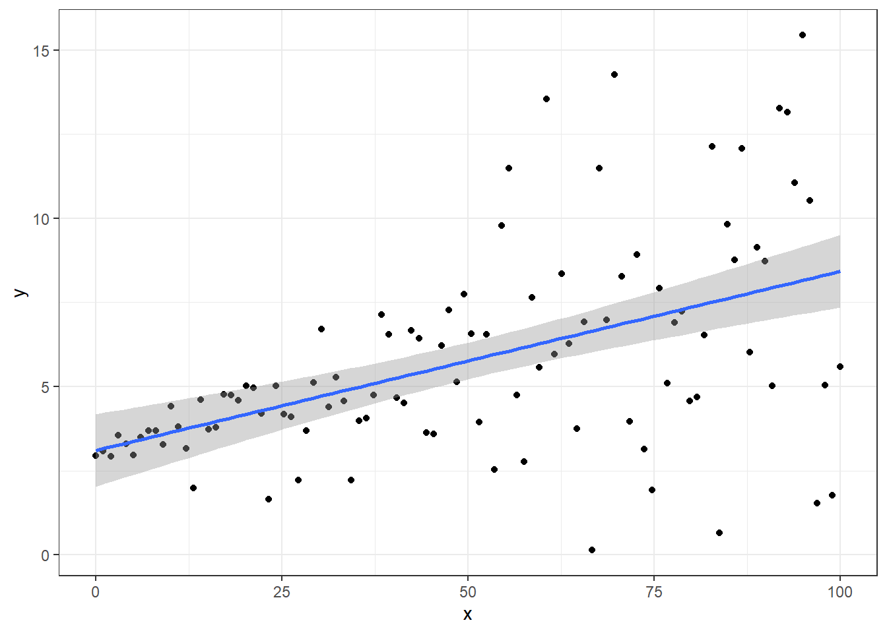
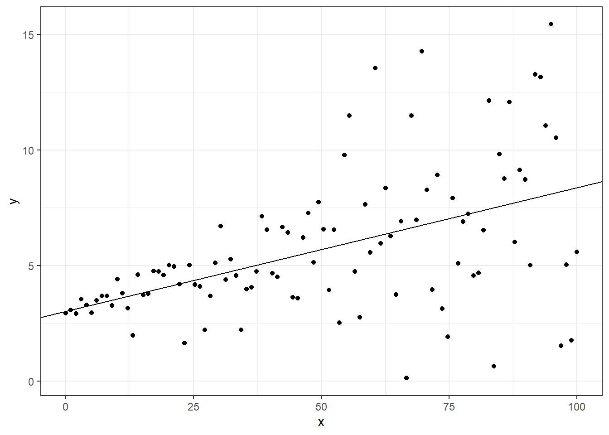
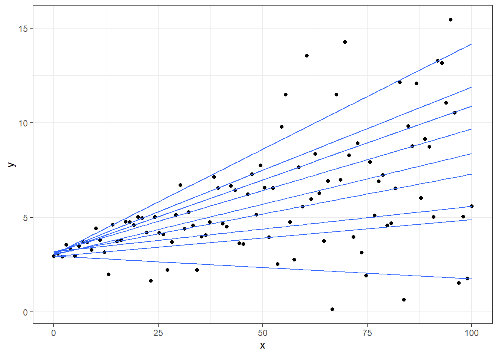
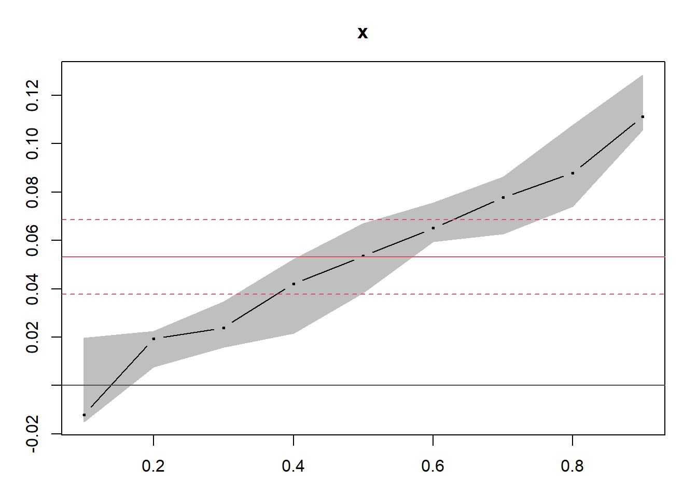

Chapter 30 Quantile Regression
For academic review on quantile regression, check (Yu, Lu, and Stander 2003)
Linear Regression is based on the conditional mean function \(E(y|x)\)
In Quantile regression, we can view each points in the conditional distribution of y. Quantile regression estimates the conditional median or any other quantile of Y.
In the case that we’re interested in the 50th percentile, quantile regression is median regression, also known as least-absolute-deviations (LAD) regression, minimizes \(\sum_{i}|e_i|\)
Properties of estimators \(\beta\)
- Asymptotically normally distributed
Advantages
- More robust to outliers compared to OLS
- In the case the dependent variable has a bimodal or multimodal (multiple humps with multiple modes) distribution, quantile regression can be extremely useful.
- Avoids parametric distribution assumption of the error process. In another word, no assumptions regarding the distribution of the error term.
- Better characterization of the data (not just its conditional mean)
- is invariant to monotonic transformations (such as log) while OLS is not. In another word, \(E(g(y))=g(E(y))\)
Disadvantages
- The dependent variable needs to be continuous with no zeroes or too many repeated values.
\[ y_i = x_i'\beta_q + e_i \]
Let \(e(x) = y -\hat{y}(x)\), then \(L(e(x)) = L(y -\hat{y}(x))\) is the loss function of the error term.
If \(L(e) = |e|\) (called absolute-error loss function) then \(\hat{\beta}\) can be estimated by minimizing \(\sum_{i}|y_i-x_i'\beta|\)
More specifically, the objective function is
\[ Q(\beta_q)=\sum_{i:y_i \ge x_i'\beta}^{N} q|y_i - x_i'\beta_q| + \sum_{i:y_i < x_i'\beta}^{N} (1-q)|y_i-x_i'\beta_q \]
where \(0<q<1\)
The sum penalizes \(q|e_i|\) for under-prediction and \((1-q)|e_i|\) for over-prediction
We use simplex method to minimize this function (cannot use analytical solution since it’s non-differentiable). Standard errors can be estimated by bootstrap.
The absolute-error loss function is symmetric.
Interpretation For the jth regressor (\(x_j\)), the marginal effect is the coefficient for the qth quantile
\[ \frac{\partial Q_q(y|x)}{\partial x_j} = \beta_{qj} \]
At the quantile q of the dependent variable y, \(\beta_q\) represents a one unit change in the independent variable \(x_j\) on the dependent variable y.
In other words, at the qth percentile, a one unit change in x results in \(\beta_q\) unit change in y.
30.1 Application
# generate data with non-constant variance
x <- seq(0,100,length.out = 100) # independent variable
sig <- 0.1 + 0.05*x # non-constant variance
b_0 <- 3 # true intercept
b_1 <- 0.05 # true slope
set.seed(1) # reproducibility
e <- rnorm(100,mean = 0, sd = sig) # normal random error with non-constant variance
y <- b_0 + b_1*x + e # dependent variable
dat <- data.frame(x,y)
hist(y)
library(ggplot2)
ggplot(dat, aes(x,y)) + geom_point()
ggplot(dat, aes(x,y)) + geom_point() + geom_smooth(method="lm")## `geom_smooth()` using formula 'y ~ x'
We follow (Koenker 1996) to estimate quantile regression
library(quantreg)## Warning: package 'quantreg' was built under R version 4.0.5## Loading required package: SparseM##
## Attaching package: 'SparseM'## The following object is masked from 'package:base':
##
## backsolveqr <- rq(y ~ x, data=dat, tau = 0.5) # tau: quantile of interest. Here we have it at 50th percentile.
summary(qr)## Warning in rq.fit.br(x, y, tau = tau, ci = TRUE, ...): Solution may be nonunique##
## Call: rq(formula = y ~ x, tau = 0.5, data = dat)
##
## tau: [1] 0.5
##
## Coefficients:
## coefficients lower bd upper bd
## (Intercept) 3.02410 2.80975 3.29408
## x 0.05351 0.03838 0.06690adding the regression line
ggplot(dat, aes(x,y)) + geom_point() +
geom_abline(intercept=coef(qr)[1], slope=coef(qr)[2])
To have R estimate multiple quantile at once
qs <- 1:9/10
qr1 <- rq(y ~ x, data=dat, tau = qs)
#check for its coefficients
coef(qr1)## tau= 0.1 tau= 0.2 tau= 0.3 tau= 0.4 tau= 0.5 tau= 0.6
## (Intercept) 2.95735740 2.93735462 3.19112214 3.08146314 3.02409828 3.16840820
## x -0.01203696 0.01942669 0.02394535 0.04208019 0.05350556 0.06507385
## tau= 0.7 tau= 0.8 tau= 0.9
## (Intercept) 3.09507770 3.10539343 3.041681
## x 0.07783556 0.08782548 0.111254# plot
ggplot(dat, aes(x,y)) + geom_point() + geom_quantile(quantiles = qs)## Smoothing formula not specified. Using: y ~ x
To examine if the quantile regression is appropriate, we can see its plot compared to least squares regression
plot(summary(qr1), parm="x")## Warning in rq.fit.br(x, y, tau = tau, ci = TRUE, ...): Solution may be nonunique
## Warning in rq.fit.br(x, y, tau = tau, ci = TRUE, ...): Solution may be nonunique
## Warning in rq.fit.br(x, y, tau = tau, ci = TRUE, ...): Solution may be nonunique
## Warning in rq.fit.br(x, y, tau = tau, ci = TRUE, ...): Solution may be nonunique
## Warning in rq.fit.br(x, y, tau = tau, ci = TRUE, ...): Solution may be nonunique
## Warning in rq.fit.br(x, y, tau = tau, ci = TRUE, ...): Solution may be nonunique
## Warning in rq.fit.br(x, y, tau = tau, ci = TRUE, ...): Solution may be nonunique
## Warning in rq.fit.br(x, y, tau = tau, ci = TRUE, ...): Solution may be nonunique
## Warning in rq.fit.br(x, y, tau = tau, ci = TRUE, ...): Solution may be nonunique
where red line is the least squares estimates, and its confidence interval. x-axis is the quantile y-axis is the value of the quantile regression coefficients at different quantile
If the error term is normally distributed, the quantile regression line will fall inside the coefficient interval of least squares regression.
# generate data with constant variance
x <- seq(0, 100, length.out = 100) # independent variable
b_0 <- 3 # true intercept
b_1 <- 0.05 # true slope
set.seed(1) # reproducibility
e <- rnorm(100, mean = 0, sd = 1) # normal random error with constant variance
y <- b_0 + b_1 * x + e # dependent variable
dat2 <- data.frame(x, y)
qr2 = rq(y ~ x, data = dat2, tau = qs)
plot(summary(qr2), parm = "x")## Warning in rq.fit.br(x, y, tau = tau, ci = TRUE, ...): Solution may be nonunique
## Warning in rq.fit.br(x, y, tau = tau, ci = TRUE, ...): Solution may be nonunique
## Warning in rq.fit.br(x, y, tau = tau, ci = TRUE, ...): Solution may be nonunique
## Warning in rq.fit.br(x, y, tau = tau, ci = TRUE, ...): Solution may be nonunique
## Warning in rq.fit.br(x, y, tau = tau, ci = TRUE, ...): Solution may be nonunique
## Warning in rq.fit.br(x, y, tau = tau, ci = TRUE, ...): Solution may be nonunique
## Warning in rq.fit.br(x, y, tau = tau, ci = TRUE, ...): Solution may be nonunique
## Warning in rq.fit.br(x, y, tau = tau, ci = TRUE, ...): Solution may be nonunique
## Warning in rq.fit.br(x, y, tau = tau, ci = TRUE, ...): Solution may be nonunique